Mini sumô · InovaWeek UVV · manual completo de montagem
Guerreiros de Realengo
Ninguém dirige: o juiz dá o START pelo controle e o robô procura o adversário e ataca sozinho. Chassi impresso em cinco peças, tração traseira por dois N20, ESP32 sob capô fechado e TCRT5000 avulso nos sensores de borda. Doze etapas com desenho de solda placa por placa, lista de corte dos fios e firmware pronto.
Envelope
98,41 × 96,65
Limite
100 × 100
Vão do solo
3,10 mm
Altura
53,1 mm
Fios
34
Peso est.
~365 g
O vídeo mostra a versão com módulo TCRT e o caminho geral dos fios. Os pontos exatos de solda estão nos desenhos das etapas.
As cinco peças
Duas placas: o chassi sozinho, e as outras quatro juntas.
1 · STL
Chassi
94,42 × 95,00 × 29,97 mm
52,8 g
Placa 1, sozinho. Base no leito.
2 · STL
Plataforma
94,42 × 50,00 × 3,00 mm
14,7 g
Placa 2. Deitada, com os 4 rasgos de fio.
3 · STL
Caixa de motor
46,00 × 33,00 × 14,00 mm
13,7 g
Placa 2. Escala 100%.
4 · STL
Tampa da caixa
46,00 × 33,00 × 4,15 mm
6,8 g
Placa 2. Com furo de Ø6 para os fios.
5 · STL
Capô
94,42 × 50,00 × 17,03 mm
23,5 g
Placa 2. Já vem invertido.
Montagem, etapa por etapa
A ordem importa — cada peça fecha o acesso à anterior.
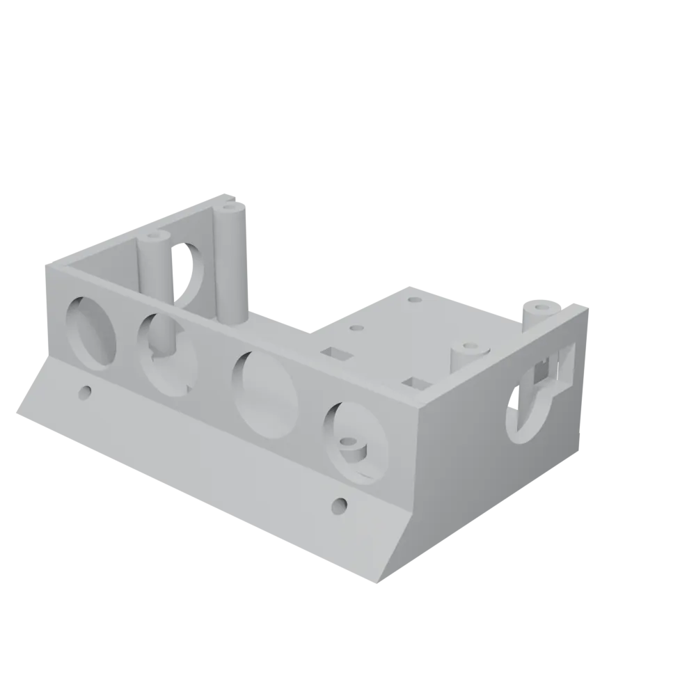
Chassi impresso
Antes de tudo
Imprimir as duas placas
IMPRESSAO-1 e IMPRESSAO-2 · PLA
Fatie IMPRESSAO-1-chassi sozinho. Camada 0,2 mm, 4 perímetros, 25% de preenchimento, sem suporte.
Se o fatiador não abrir o .stl, use o .3mf com o mesmo nome: é a mesma peça.
Quando sair, teste um transdutor do HC-SR04 nos dois furos centrais da frente. Tem que entrar com a mão.
Fatie IMPRESSAO-2-restante. As quatro peças já vêm posicionadas e o capô de cabeça para baixo — não gire nada.
Se o fatiador tratar como um objeto só, use Dividir em objetos. Ative z-hop.
chassi 52,8 g · placa 2 com 58,7 g · total 111,5 g de PLA
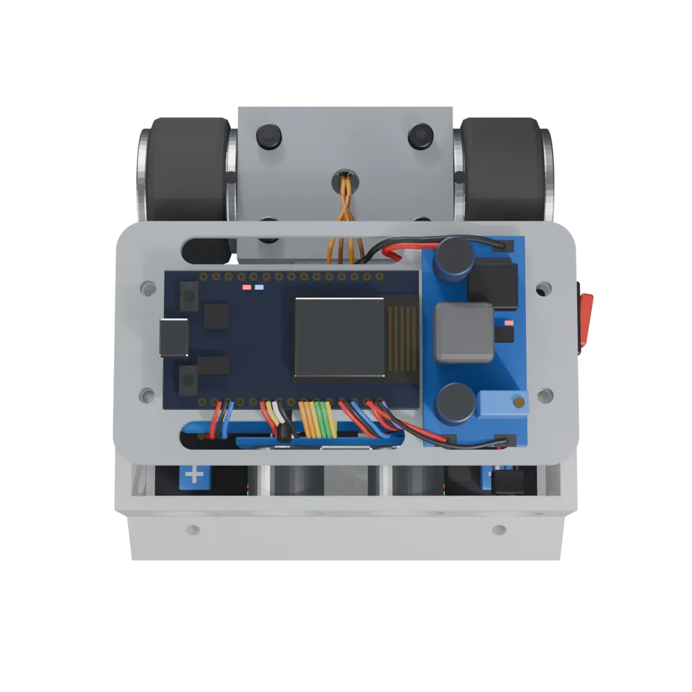
Visão geral · pontos exatos nos desenhos
Etapa 1
Entender a alimentação antes de soldar
Só leitura — 5 minutos que evitam queimar placa
Ninguém dirige o robô. O controle fica com o juiz, que dá o START nos dois robôs ao mesmo tempo e o STOP no fim. Depois do START ele procura o adversário com o sonar e ataca sozinho; os sensores de linha existem só para ele não sair da arena.
Esquerda e direita são sempre do robô. Coloque ele na mesa com o sonar apontando para longe de você: o que está à sua esquerda é o lado esquerdo dele.
O robô tem três tensões: 7,4 V da bateria (motores e LM2596), 5 V do LM2596 (ESP32 e HC-SR04) e 3,3 V que sai do ESP32 (sensores e lógica da ponte H).
Um pino de 3V3 alimenta quatro coisas (os dois TCRT, o receptor do juiz e a lógica da ponte H) porque o fio se divide numa emenda. O limite é a corrente: tudo junto usa ~130 mA e o regulador da placa fornece 800 mA.
GND é um ponto só. Os furos GND de cada placa já vêm ligados por dentro; os fios só unem as placas. Qualquer furo GND serve.
Um fio por furo no ESP32. Quando algo precisa ir para vários lugares, a divisão acontece na emenda, nunca no pino.
Cor obrigatória só na alimentação: vermelho 7,4 V · laranja 5 V · amarelo 3,3 V · preto GND. Sinal pode ser de qualquer cor, mas etiquete as duas pontas com fita.
Nunca 5 V num pino do ESP32. Por isso o ECHO passa por um divisor e o receptor IR e os TCRT ficam no 3,3 V.
Os três níveis de tensão. Cada traço é um fio. O 3,3 V sai de um pino do ESP32 e se divide numa emenda — é assim que um pino alimenta quatro coisas. O 5 V vem do LM2596, não do ESP32.Por que poucos furos GND bastam. O tracejado é o cobre que já liga os furos GND dentro de cada placa; os traços cheios são os fios que você solda. Com esses fios, o GND do robô inteiro vira um condutor só — qualquer furo GND serve para qualquer componente.
Ache as pernas. Lente azul = emissor (pernas A e K). Lente preta = receptor (pernas C e E). Na dúvida, multímetro no modo diodo: só o par A→K mostra cerca de 1,1 V.
Solde o 100 Ω na perna A e o 10 kΩ na perna C. Junte as pontas livres dos dois resistores e solde ali o fio amarelo (3V3), de 100 mm.
Solde o fio de sinal na perna C, junto do 10 kΩ: branco no sensor esquerdo, cinza no direito, 150 mm.
Una as pernas K e E e solde o fio preto (GND), de 100 mm. Termorretrátil em cada perna e em cada resistor.
Chassi em pé numa mesa lisa, ainda sem rodas. Corte um pedaço de cartão de visita de 10 × 6 mm e ponha na mesa, dentro da janela de 12 × 8 mm.
Por cima, desça o sensor na janela com as lentes para baixo até encostarem no cartão. O cartão (≈0,3 mm) é o recuo que impede o sensor de raspar.
Segurando o sensor, ponha cola quente só em cima, entre o corpo e a borda da janela. Espere esfriar e tire o cartão. Repita do outro lado.
Deixe os fios soltos no piso. Eles vão para as emendas e para o rasgo R1 na etapa 10.
Opção B, se conseguirem dois módulos: assente cada módulo nos dois pedestais, com o sensor atravessando a janela, e parafuse com M3 × 8. Os mesmos 3 fios: VCC no amarelo, GND no preto, D0 no sinal. O código não muda.
Pico de leitura do TCRT5000: 2,5 mm (datasheet Vishay) · vão do solo 3,10 + recuo 0,3 = 3,4 mm até o dohyô.
Mudou: O sensor principal agora é o TCRT5000 avulso, sem placa. Os pedestais continuam no chassi e servem ao módulo (opção B).
Esquerda: 100 Ω na perna A (LED), 10 kΩ entre a perna C e o 3V3, pernas K e E juntas no GND. Direita: o sensor dentro da janela de 12 × 8 mm, lente 0,3 mm acima do fundo, lendo o chão a 3,4 mm (o pico dele é 2,5 mm). Opção B, se conseguirem dois módulos: parafuse cada um nos pedestais com M3 × 8 e ligue VCC no amarelo, GND no preto e D0 no fio do sinal. O código é o mesmo.
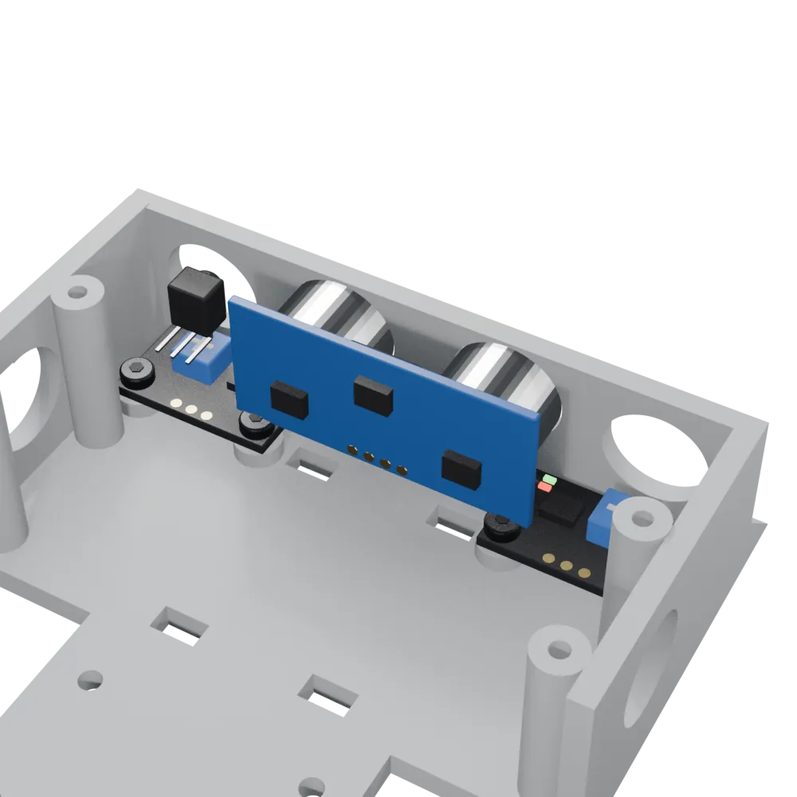
Vista de dentro da baia
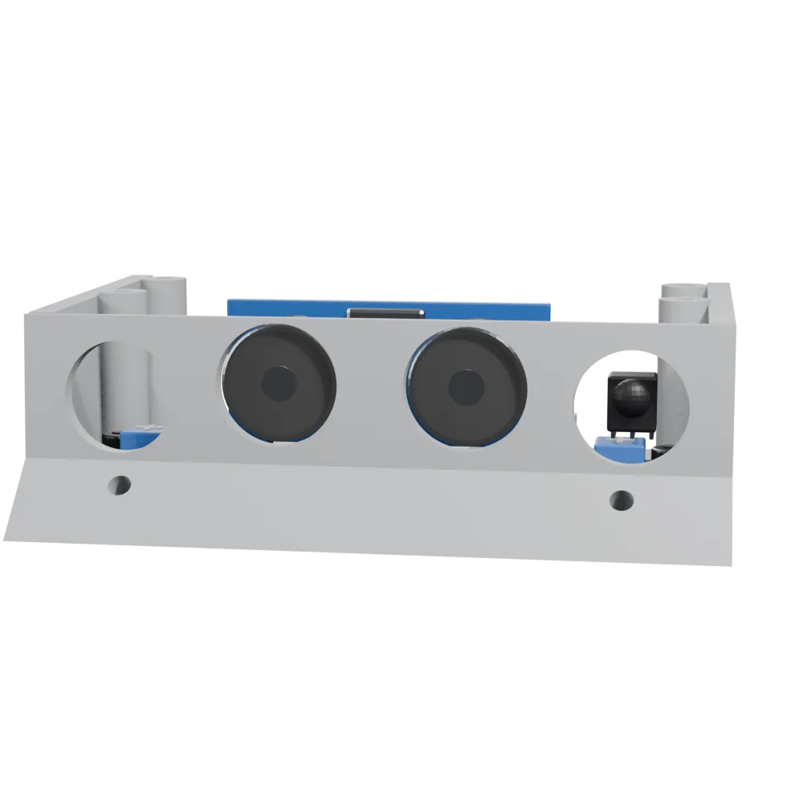
Vista de frente
Etapa 3
Ultrassônico e receptor do juiz
HC-SR04 · VS1838B ou KY-022 · 1 kΩ + 2 kΩ · cola quente
HC-SR04 na bancada. Se os pinos apontam para baixo, corte com 3 mm. Solde: laranja no VCC, verde no TRIG, azul no ECHO, preto no GND, todos de 100 a 110 mm.
A uns 5 cm do sensor, corte o fio azul e ponha o 1 kΩ em série. Da junção do 1 kΩ com o azul que segue para o ESP32, solde o 2 kΩ até o fio preto. Termorretrátil em tudo.
Encaixe os transdutores nos furos centrais Ø16,4 por dentro da baia até a placa encostar na parede. Os fios sobem colados nas costas da placa: entre ela e a bateria sobram 1,9 mm.
Trave com uma gota de cola quente na lateral da placa, não nos transdutores.
Receptor do juiz: confira no desenho qual pino é qual — no avulso o pino do meio é GND, na plaquinha KY-022 é +. Solde roxo no sinal, amarelo no VCC (+) e preto no GND.
Cola quente atrás do furo externo Ø15 do lado esquerdo do robô, cúpula virada para o furo: é por ali que o controle do juiz alcança o receptor.
Furos centrais a 26,0 mm entre centros — o espaçamento dos transdutores. Topo da placa do HC-SR04 Z = 29,96 · fundo da plataforma Z = 29,97.
Mudou: O receptor só recebe o START e o STOP do juiz — ninguém dirige o robô. Lado corrigido para o ponto de vista do robô: é o furo externo esquerdo dele.
HC-SR04 visto de frente. O ECHO sai com 5 V: o 1 kΩ em série e o 2 kΩ até o GND baixam para 3,3 V, que o ESP32 aguenta. Monte o divisor no chicote, uns 5 cm depois do sensor (ali já passou da bateria), e cubra com termorretrátil. Pinos virados para baixo? Corte com 3 mm e solde o fio no toco: entre a placa e a bateria sobram só 1,9 mm, então os fios sobem colados nas costas da placa.Receptor do controle do juiz, alimentado em 3,3 V. Nunca ligue no 5 V: a saída acompanha a alimentação e 5 V no pino D19 danifica o ESP32.
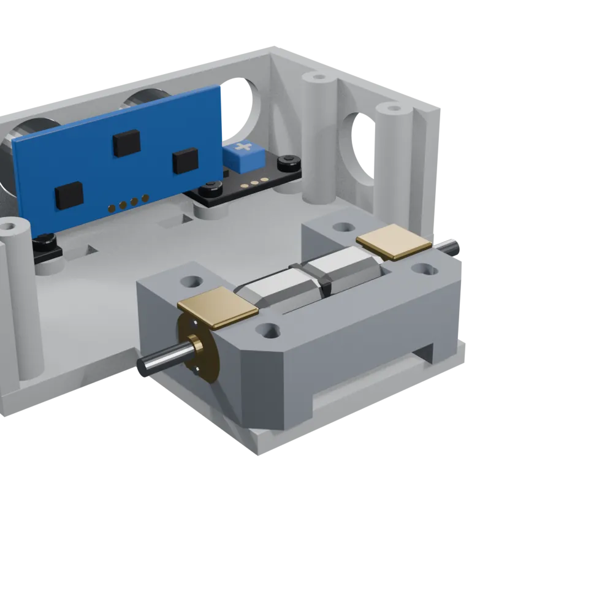
Motores entrando pelas laterais
Etapa 4
Motores dentro da caixa
2 × GA12-N20 · fio 22 AWG · caixa de motor
Solde dois fios de 120 mm (22 AWG) nos terminais de cobre de cada motor: cinza no motor do lado esquerdo do robô, branco no do lado direito.
Enfie o motor esquerdo pela abertura esquerda da caixa, com o redutor dourado para fora e o eixo saindo.
Faça o mesmo do lado direito. Os dois se encostam no meio — dois motores de 24 mm somam 48 e a caixa tem 46.
Deixe os quatro fios saindo para cima, no meio da caixa.
Furo Ø12 da caixa com eixo a 9,00 mm da base dela → com a caixa no tab, eixo a 12,90 mm do fundo do chassi.
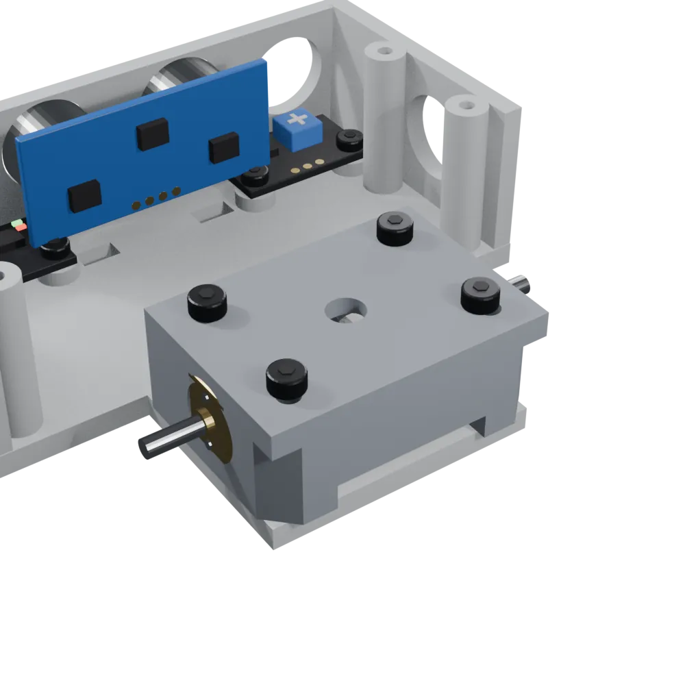
Tampa e parafusos
Etapa 5
Fechar a caixa e prender no chassi
Tampa · 4 × M3 × 25 com porca
Passe os quatro fios dos motores pelo furo de Ø6 no centro da tampa.
Encaixe a tampa. O berço semicilíndrico de Ø13 abraça o corpo dos motores e impede que girem.
Leve o conjunto ao tab traseiro do chassi e alinhe os quatro furos.
Quatro parafusos M3 × 25 de cima para baixo, porca por baixo do chassi, apertados em diagonal.
Pilha: tampa 4,15 + caixa 14,00 + tab 3,85 = 22,00 mm.
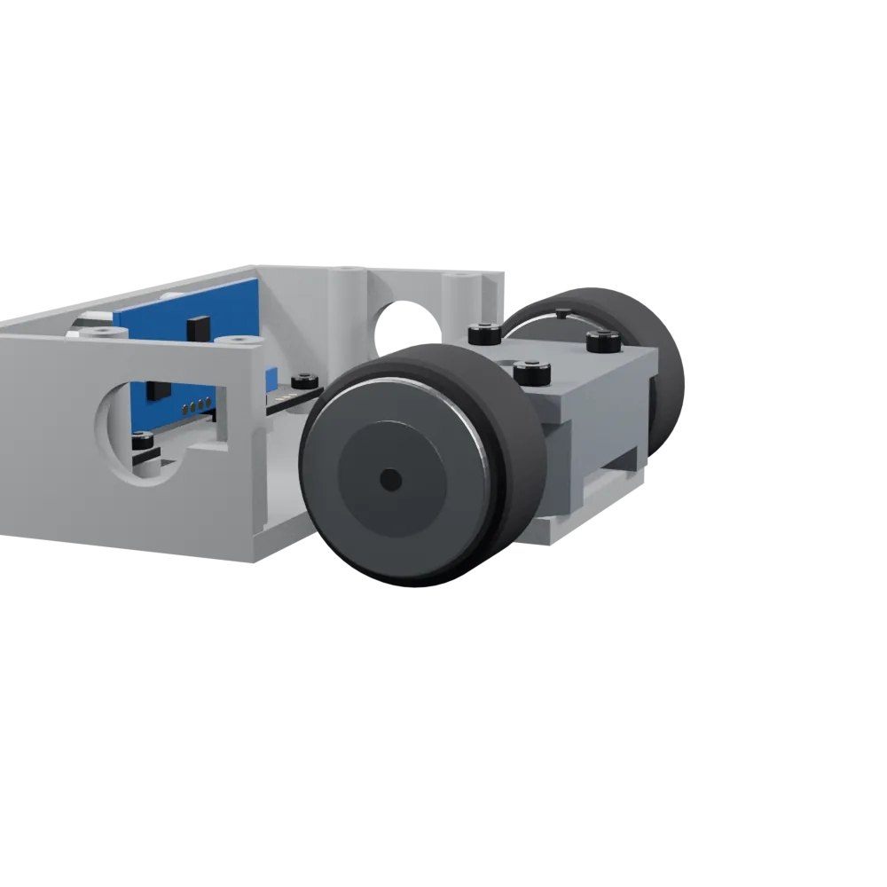
Rodas no eixo
Etapa 6
Rodas
2 × StickyMAX Ø32 · chave Allen
Deslize o cubo de alumínio no eixo de 3 mm, deixando cerca de 1 mm de folga até a caixa.
Aperte o parafuso Allen M4 do cubo sobre a parte plana do eixo. O eixo é em D: na parte redonda a roda patina.
Gire cada roda com a mão. Tem que girar livre, sem raspar.
Roda Ø32, raio 16 · eixo a 12,90 → vão do solo 3,10 mm.
Duas tiras de velcro no piso da baia e duas na bateria. Velcro, não cola: a bateria sai para carregar.
Bateria deitada, o mais baixo possível — centro de gravidade baixo impede que o adversário vire o robô.
Ponha um conector entre a bateria e o robô (o par do conector que veio na bateria, ou um JST). Sem ele a bateria fica presa pelos fios.
Na bancada, solde na chave: fio 1 (vermelho, do conector) no T1; fios 2 e 3 (vermelhos, 100 mm) juntos no T2.
Passe os fios pelo furo de 13 × 9 mm por fora e empurre a chave na lateral esquerda do robô até as travas estalarem.
O fio 4 (preto, do conector) fica solto: ele vai no GND da ponte H na etapa 8.
Frente da bateria a 0,9 mm dos sensores de linha e traseira a 0,4 mm da caixa de motor.
Mudou: Lado da chave corrigido para o ponto de vista do robô: lateral esquerda dele.
Caminho dos 7,4 V, em fio 22 AWG. A chave corta só o positivo. Use um conector entre a bateria e o robô para tirar a bateria e carregar. Motores: cada um tem 2 terminais de cobre, sem polaridade fixa; se a roda girar para trás no teste, troque os dois fios daquele motor na TB6612.
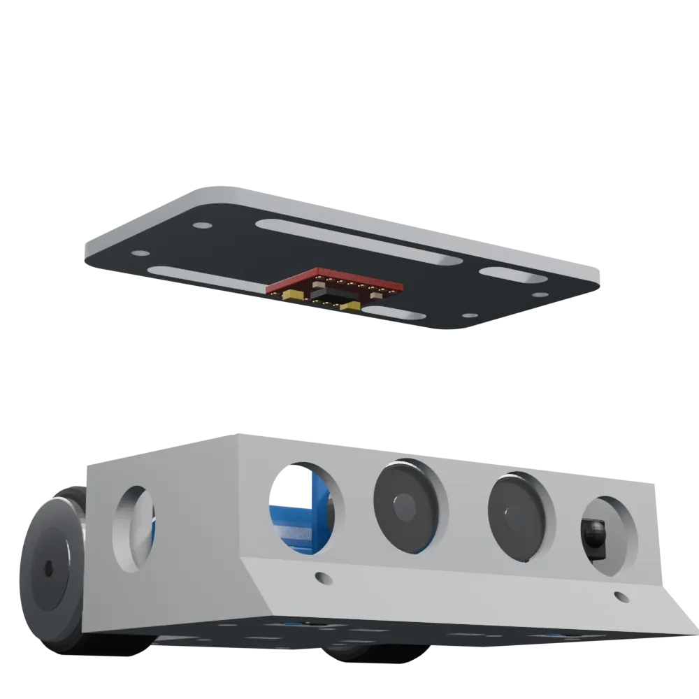
Ponte H por baixo da plataforma
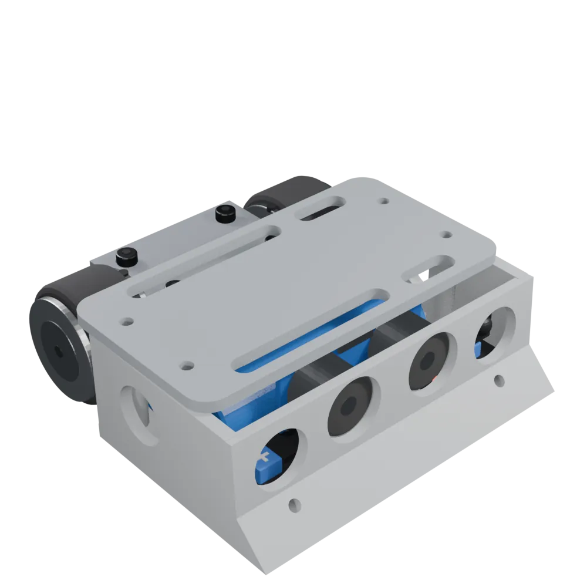
Plataforma assentada
Etapa 8
Soldar e colar a ponte H
TB6612 · plataforma · fita dupla-face · 15 fios
TB6612 na mão, componentes virados para você. Fileira de potência: VM ← fio 3 (chave) · VCC ← amarelo de 100 mm (ponta livre vai à emenda 3V3) · GND ← fio 4 (bateria −).
Ainda na potência: A01 e A02 ← os dois cinza do motor esquerdo · B02 e B01 ← os dois brancos do motor direito · último GND → fio 5, preto de 80 mm, que vai ao LM2596.
Fileira de controle, 7 fios de 120 mm: PWMA marrom · AIN2 azul · AIN1 verde · STBY roxo · BIN1 verde · BIN2 azul · PWMB marrom. Fita com "B" nos três do canal B.
O GND da fileira de controle fica livre: o GND já chega pela fileira de potência.
Cole a TB6612 por baixo da plataforma com fita dupla-face: costas da placa na fita, componentes para baixo, fileira de potência virada para trás.
Passe os 7 fios de controle pelo R3 e os fios 2 e 5 pelo R4 antes de encostar a plataforma. Assente nas colunas sem parafusar.
Fundo da plataforma Z = 29,97 · fita 1 mm · componentes da TB6612 até Z = 25,77 · topo da bateria Z = 24,60.
TB6612 com os componentes virados para você. Solde tudo com a placa na mão; depois cole com os componentes para baixo e a fileira de potência virada para os motores. Os dois GND da fileira de cima são o mesmo ponto por dentro da placa. A ordem dos furos muda entre fabricantes: vale o nome impresso.
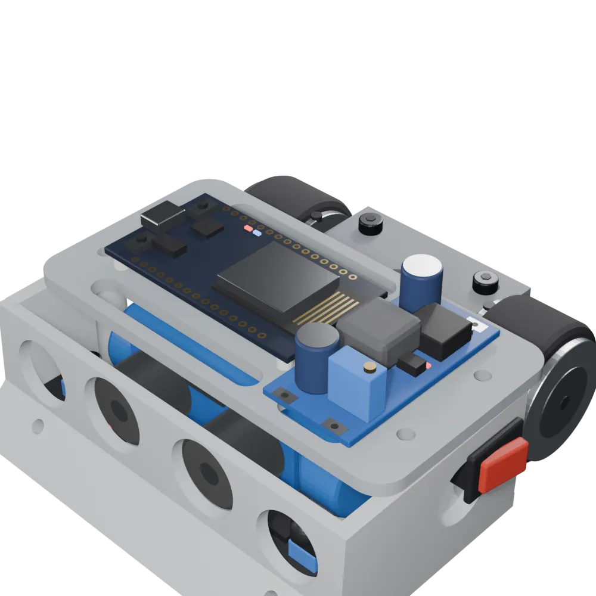
ESP32 e LM2596 no lugar
Etapa 9
Regulador e ESP32
LM2596 · ESP32 · 4 espaçadores de 3 mm · multímetro
LM2596 direto na plataforma com fita dupla-face de 1 mm: entrada (IN) para trás, em cima do R4; saída (OUT) para a frente, em cima do R2.
Por baixo, pelo R4: fio 2 no IN+ e fio 5 no IN−.
Ligue a chave, meça entre OUT+ e OUT− e gire o trimpot azul até 5,00 V. Desligue a chave.
Só agora a saída. Por baixo, pelo R2: laranja no OUT+ e preto no OUT−, que descem até o HC-SR04. Por cima: laranja no OUT+ e preto no OUT−, de 110 mm, que vão ao ESP32.
ESP32 sobre os quatro espaçadores de 3 mm, USB virado para a direita do robô — a janela do capô fica desse lado. Ainda sem soldar nada nele.
Topo dos capacitores do LM2596 Z = 46,29 · teto interno do capô Z = 47,50.
LM2596 visto de cima. Cada furo da saída recebe dois fios: um soldado por cima (vai ao ESP32) e outro por baixo (desce pelo rasgo pequeno da frente até o HC-SR04). Ajuste a saída para 5,00 V antes de soldar a saída.
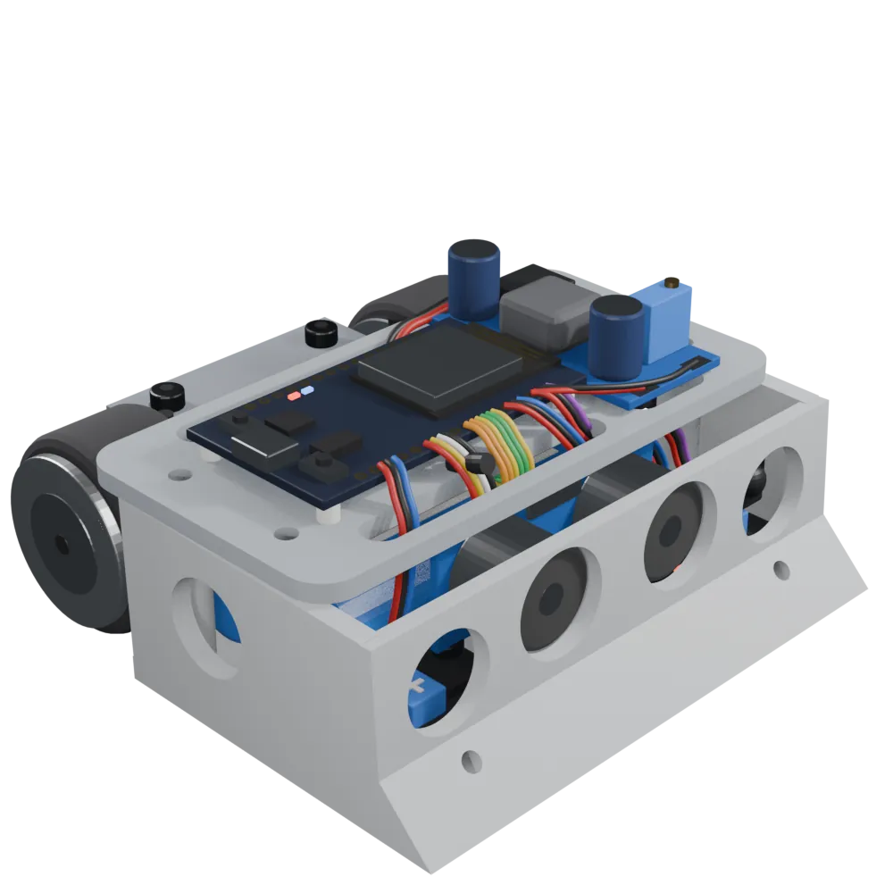
Fios subindo pelos rasgosVista de cima
Etapa 10
Emendas e solda no ESP32
2 emendas · 16 furos no ESP32 · termorretrátil
Leve os fios dos sensores por cima da bateria até atrás do HC-SR04, como no mapa.
Emenda 3V3: amarelo de 60 mm que vai ao ESP32 + amarelos dos dois TCRT, do receptor IR e da ponte H. Emenda GND: preto de 60 mm que vai ao ESP32 + pretos dos dois TCRT e do receptor IR.
Pelo R1 sobem: os dois fios de 60 mm das emendas, TRIG, ECHO, IR e os sinais dos dois TCRT.
Os sinais dos TCRT vão para D34 e D35, na fileira de trás: correm por baixo do ESP32, no vão de 3 mm, e sobem pelo furo.
Pelo R3 sobem os 7 fios de controle da ponte H, direto para a fileira de trás.
Os dois fios de cima do LM2596 correm por cima da plataforma, passam por baixo do ESP32 e entram no VIN e no GND da fileira de trás.
Solde o ESP32 um furo por vez: fio de baixo para cima, solda por cima, corta a sobra. Confira no desenho antes do próximo.
Mudou: O vídeo mostra o caminho geral dos fios. Os pontos exatos de solda são os destes desenhos.
Embaixo da plataforma, visto de cima com a frente para cima. Os fios correm por cima da bateria e sobem pelos rasgos. O que acontece em cima de cada rasgo está na tabela logo abaixo.
Rasgo
O que passa
Onde chega em cima
R1 · rasgo grande da frente
3V3 e GND das emendas (fios 14 e 15), TRIG, ECHO, IR e os sinais dos dois TCRT
fileira da frente do ESP32; D34 e D35 correm por baixo dele até a fileira de trás
R2 · rasgo pequeno da frente
5 V e GND do HC-SR04 (fios 12 e 13)
OUT+ e OUT− do LM2596, soldados por baixo
R3 · rasgo grande de trás
os 7 fios de controle da ponte H (28 a 34)
fileira de trás do ESP32: D13, D14, D25, D26, D27, D32, D33
R4 · rasgo pequeno de trás
7,4 V da chave e GND da ponte H (fios 2 e 5)
IN+ e IN− do LM2596, soldados por baixo
Por cima da plataforma
5 V e GND do LM2596 para o ESP32 (fios 10 e 11)
VIN e GND da fileira de trás, entrando por baixo do ESP32
As duas emendas ficam embaixo da plataforma, atrás do HC-SR04. Passe o termorretrátil antes, desencape 5 mm de cada ponta, torça todas juntas, solde e cubra. 5 pontas no 3V3, 4 no GND.ESP32 visto de cima, do jeito que fica no robô: fileira de cima virada para o sonar, USB do lado direito do robô. Os 16 furos coloridos recebem fio; os cinza ficam vazios. Um fio por furo. Confira o nome impresso ao lado de cada furo — o desenho segue a DevKit V1 de 30 pinos.
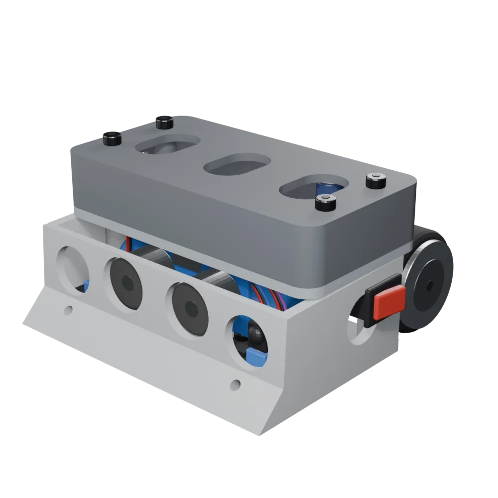
Robô fechado
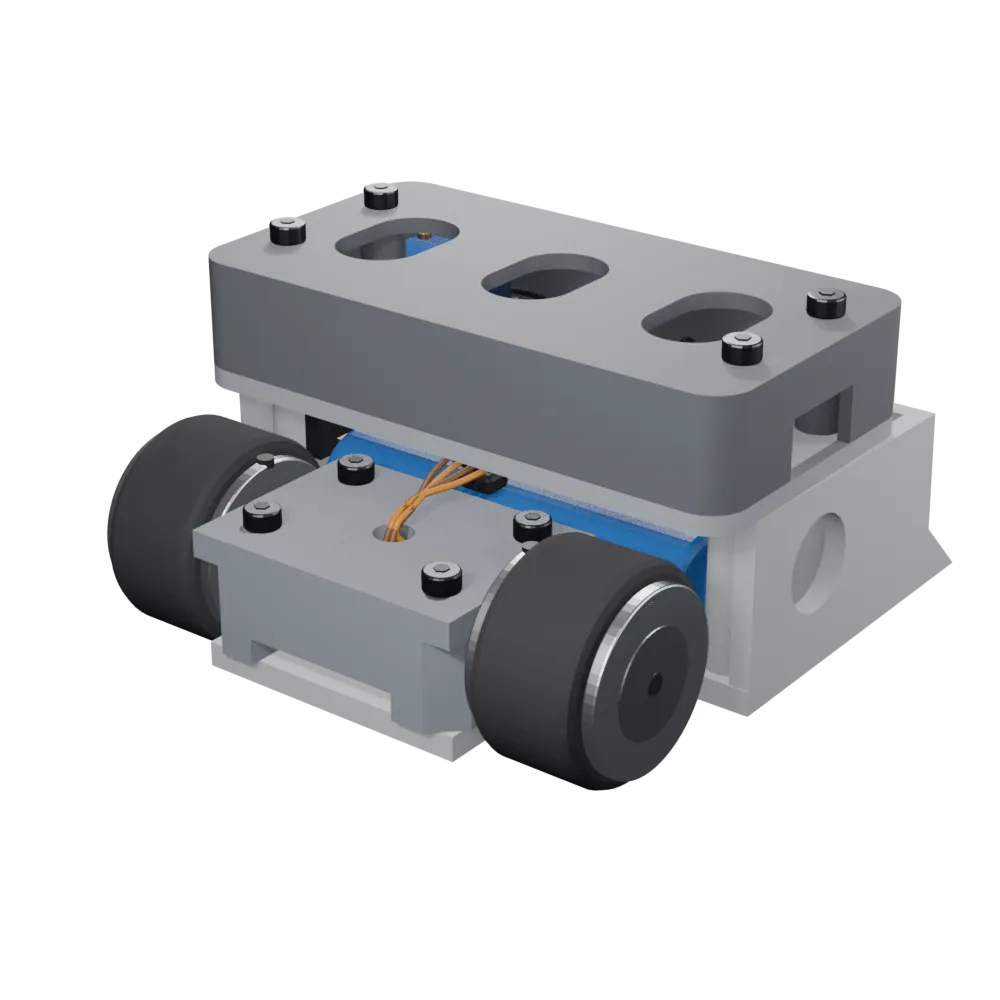
Traseira
Etapa 11
Checagem e capô
Multímetro · capô · 4 × M3 × 30
Antes de fechar, faça a checagem com multímetro da seção Antes de ligar a bateria. Com o capô fechado não dá mais para consertar.
Encaixe o capô por cima, alinhando os quatro furos com as colunas.
Quatro parafusos M3 × 30 de cima, atravessando capô → plataforma → coluna do chassi. São eles que prendem a plataforma.
O USB do ESP32 fica atrás da janela de 16 × 9 mm na lateral direita do robô — dá para regravar sem abrir.
Altura total 53,1 mm · envelope 98,41 × 96,65 mm contra o limite de 100 × 100.
Mudou: Lado da janela do USB corrigido para o ponto de vista do robô: lateral direita dele.
Pronto para calibrar
Etapa 12
Programar, calibrar e lutar
Cabo USB · Arduino IDE · controle do juiz
Arduino IDE → Gerenciador de Placas: esp32 da Espressif (3.3.11). Gerenciador de Bibliotecas: IRremote (4.7.1).
Placa DOIT ESP32 DEVKIT V1. Grave com MODO_TESTE = true e abra o Monitor Serial a 115200.
Aponte o controle do juiz (ou um do mesmo modelo) e aperte START e depois STOP. Anote os dois códigos, preencha IR_START e IR_STOP e regrave. Aproxime a mão da frente do robô: a distância tem que cair.
Robô no preto: a leitura da linha fica alta (ex.: 3000). Na borda branca, baixa (ex.: 300). Se não mudar, confira os resistores e a altura do sensor.
Passe só o sensor do lado esquerdo do robô sobre o branco: tem que mudar esq. Se mudar dir, os fios de D34 e D35 estão trocados.
Robô no ar, chave ligada: digite e e depois d no Monitor Serial. Cada roda gira para a frente por 0,7 s. Para trás: troque os dois fios daquele motor. Roda errada: troque os fios A com os B.
Confira no regulamento se o robô tem que esperar 5 s depois do START. Ajuste ESPERA_APOS_START (5000 = 5 s, 0 = sai na hora do sinal), coloque MODO_TESTE = false e regrave.
Na luta: ligue a chave e ponha o robô no centro do dohyô, sobre o preto. LED piscando devagar = esperando o juiz. No START o LED pisca rápido durante a espera; depois o robô procura o adversário e ataca sozinho. No STOP ele para.
O controle é só do juiz: START e STOP. Enquanto espera, o robô mede o preto embaixo dele e calibra os sensores de linha na largada.
Fiação e solda
Todos os 34 fios, a ordem de solda e a checagem antes de ligar.
Lista de corte
Comprimentos com folga para soldar com a plataforma levantada ao lado do chassi. No total: 920 mm de 22 AWG e 2720 mm de 26 AWG. Numere cada fio com fita nas duas pontas.
Nº
De
Para
Cor
Bitola
Corte com
Passa por
Alimentação 7,4 V
1
Conector da bateria (+)
Chave T1
vermelho
22 AWG
60 mm
—
2
Chave T2
LM2596 IN+
vermelho
22 AWG
100 mm
R4, soldado por baixo
3
Chave T2
TB6612 VM
vermelho
22 AWG
100 mm
embaixo da plataforma
4
Conector da bateria (−)
TB6612 GND (3º furo)
preto
22 AWG
100 mm
embaixo da plataforma
5
TB6612 GND (último furo)
LM2596 IN−
preto
22 AWG
80 mm
R4, soldado por baixo
Motores
6
Motor esquerdo
TB6612 A01
cinza
22 AWG
120 mm
furo Ø6 da tampa
7
Motor esquerdo
TB6612 A02
cinza
22 AWG
120 mm
furo Ø6 da tampa
8
Motor direito
TB6612 B01
branco
22 AWG
120 mm
furo Ø6 da tampa
9
Motor direito
TB6612 B02
branco
22 AWG
120 mm
furo Ø6 da tampa
5 V do LM2596
10
LM2596 OUT+ (por cima)
ESP32 VIN
laranja
26 AWG
110 mm
por cima, depois por baixo do ESP32
11
LM2596 OUT− (por cima)
ESP32 GND (fileira de trás)
preto
26 AWG
110 mm
por cima, depois por baixo do ESP32
12
LM2596 OUT+ (por baixo)
HC-SR04 VCC
laranja
26 AWG
110 mm
R2
13
LM2596 OUT− (por baixo)
HC-SR04 GND
preto
26 AWG
110 mm
R2
3,3 V e GND dos sensores
14
ESP32 3V3
emenda 3V3
amarelo
26 AWG
60 mm
R1
15
ESP32 GND (fileira da frente)
emenda GND
preto
26 AWG
60 mm
R1
16
emenda 3V3
TCRT esquerdo (resistores)
amarelo
26 AWG
100 mm
—
17
emenda 3V3
TCRT direito (resistores)
amarelo
26 AWG
100 mm
—
18
emenda 3V3
receptor IR VCC
amarelo
26 AWG
100 mm
—
19
emenda 3V3
TB6612 VCC
amarelo
26 AWG
100 mm
embaixo da plataforma
20
emenda GND
TCRT esquerdo (K + E)
preto
26 AWG
100 mm
—
21
emenda GND
TCRT direito (K + E)
preto
26 AWG
100 mm
—
22
emenda GND
receptor IR GND
preto
26 AWG
100 mm
—
Sinais
23
TCRT esquerdo (perna C)
ESP32 D34
branco
26 AWG
150 mm
R1, por baixo do ESP32
24
TCRT direito (perna C)
ESP32 D35
cinza
26 AWG
150 mm
R1, por baixo do ESP32
25
HC-SR04 TRIG
ESP32 D5
verde
26 AWG
100 mm
R1
26
HC-SR04 ECHO → 1 kΩ
ESP32 D18
azul
26 AWG
100 mm
R1
27
receptor IR OUT
ESP32 D19
roxo
26 AWG
120 mm
R1
28
TB6612 PWMA
ESP32 D25
marrom
26 AWG
120 mm
R3
29
TB6612 AIN2
ESP32 D27
azul
26 AWG
120 mm
R3
30
TB6612 AIN1
ESP32 D26
verde
26 AWG
120 mm
R3
31
TB6612 STBY
ESP32 D13
roxo
26 AWG
120 mm
R3
32
TB6612 BIN1
ESP32 D32
verde
26 AWG
120 mm
R3 · fita B
33
TB6612 BIN2
ESP32 D33
azul
26 AWG
120 mm
R3 · fita B
34
TB6612 PWMB
ESP32 D14
marrom
26 AWG
120 mm
R3 · fita B
Ordem de solda
Motores — 2 fios em cada, antes de entrar na caixa (etapa 4).
TCRT5000 × 2 — resistores e 3 fios, termorretrátil em cada perna (etapa 2).
HC-SR04 — 4 fios e o divisor 1 kΩ / 2 kΩ no chicote (etapa 3).
Receptor do juiz — 3 fios, conferindo o pino do meio (etapa 3).
Chave e conector da bateria — fios 1 a 4 (etapa 7).
TB6612 — os 15 fios, antes de colar na plataforma (etapa 8).
LM2596, entrada — fios 2 e 5; ajuste 5,00 V; só então a saída, fios 10 a 13 (etapa 9).
Emendas 3V3 e GND — com termorretrátil (etapa 10).
ESP32 por último — 16 furos, um por vez, conferindo o desenho (etapa 10).
Antes de ligar a bateria
Multímetro no bipe (continuidade), com a bateria desconectada.
Chave ligada, entre o T2 da chave e o GND: não pode apitar. Se apitar, há curto no 7,4 V.
Entre VIN e GND do ESP32: não pode apitar. Um bipe curto que some é capacitor carregando — normal.
Entre 3V3 e GND do ESP32: não pode apitar.
Entre o preto do conector da bateria e o GND do ESP32: tem que apitar.
Cada fio de sinal: ponta a ponta apita, e não apita com o furo vizinho no ESP32.
Primeira vez ligado: chave desligada, grave pelo USB com MODO_TESTE = true. Depois conecte a bateria e ligue a chave com o robô no ar.
Firmware
ESP32 · core esp32 3.3.11 · IRremote 4.7.1 · o controle é só do juiz (START e STOP) · serve para o TCRT avulso e para o módulo.
guerreiros_de_realengo.ino
/* =============================================================================
GUERREIROS DE REALENGO · firmware de mini sumo · InovaWeek UVV
-----------------------------------------------------------------------------
Placa : ESP32 DevKit V1, 30 pinos (Arduino core "esp32" 3.3.x)
Ponte H : TB6612FNG
Sensores: HC-SR04 (acha o adversario) + 2x TCRT5000 (borda branca)
+ receptor IR VS1838B/KY-022 (sinal do juiz)
NINGUEM DIRIGE O ROBO. O controle fica com o juiz, que aponta para os
dois robos e da o START ao mesmo tempo (e o STOP no fim).
chave ligada -> espera o START do juiz (mede o preto enquanto espera)
-> START -> ESPERA_APOS_START -> gira procurando o adversario -> ataca
-> se um sensor ver a borda branca, recua e gira de volta para o centro
-> STOP do juiz: para na hora.
Biblioteca: IRremote (Armin Joachimsmeyer) 4.7 ou superior
Arduino IDE -> Gerenciador de Bibliotecas -> procurar "IRremote"
ESQUERDA e DIREITA sao sempre do ponto de vista do ROBO:
robo na mesa, frente (o sonar) apontando para longe de voce.
SENSOR DE LINHA: o codigo serve para as duas opcoes, sem mudar nada.
A) TCRT5000 avulso + resistores de 100 ohm e 10 k (opcao principal)
B) modulo TCRT5000 com saida D0 (opcao alternativa)
Nas duas, o BRANCO da borda puxa a leitura para BAIXO.
ANTES DE RODAR:
1. Ajuste o LM2596 para 5,00 V com multimetro. So depois ligue o ESP32.
2. Grave com MODO_TESTE = true e abra o Monitor Serial a 115200.
3. Aponte o controle do juiz, aperte START e depois STOP e anote os
codigos que aparecem. Preencha IR_START e IR_STOP.
4. Ponha o robo no preto e depois na borda branca. Veja os numeros da linha.
Preto tem que dar bem mais que branco (ex.: 3000 contra 300).
5. Com o robo NO AR, digite e (motor esquerdo) e d (motor direito)
no Monitor Serial. Cada roda deve girar PARA A FRENTE.
Se girar para tras, troque os dois fios daquele motor na TB6612.
6. Confira no regulamento se o robo precisa esperar 5 s depois do START
e ajuste ESPERA_APOS_START. Coloque MODO_TESTE = false e regrave.
============================================================================= */
#include <IRremote.hpp>
// ---------------------------------------------------------------- MODO TESTE
// true = os motores so giram quando voce manda (e / d) pelo cabo USB
// false = modo de combate
const bool MODO_TESTE = true;
// ------------------------------------------------------------------- PINAGEM
// TB6612FNG (canal A = motor ESQUERDO, canal B = motor DIREITO)
const int PIN_AIN1 = 26;
const int PIN_AIN2 = 27;
const int PIN_PWMA = 25;
const int PIN_BIN1 = 32;
const int PIN_BIN2 = 33;
const int PIN_PWMB = 14;
const int PIN_STBY = 13; // HIGH habilita a ponte H
// HC-SR04 (ECHO passa pelo divisor 1 k / 2 k: 5 V -> 3,3 V)
const int PIN_TRIG = 5;
const int PIN_ECHO = 18;
// TCRT5000 (34 e 35 sao entradas analogicas do ADC1, so-entrada)
const int PIN_LINHA_ESQ = 34;
const int PIN_LINHA_DIR = 35;
// Receptor IR do juiz e LED azul da placa
const int PIN_IR = 19;
const int PIN_LED = 2;
// -------------------------------------------------------------- AJUSTE FINO
const int PWM_FREQ = 20000; // 20 kHz: fora da faixa audivel, motor nao chia
const int PWM_RES = 8; // resolucao 8 bits -> 0 a 255
const int VEL_ATAQUE = 255; // empurrando o oponente
const int VEL_BUSCA = 165; // girando a procura
const int VEL_RECUO = 210; // fugindo da borda
const int VEL_TESTE = 140; // teste de motor no MODO_TESTE
const int DIST_ALVO_CM = 45; // acima disso, considera que nao ha oponente
const int CONFIRMA_ALVO = 2; // leituras seguidas para aceitar a deteccao
// Espera entre o START do juiz e a largada.
// 5000 = 5 s (regra classica). Se o regulamento deixar sair na hora do sinal, use 0.
const unsigned long ESPERA_APOS_START = 5000;
const unsigned long T_RECUO = 320; // ms recuando ao ver a linha
const unsigned long T_GIRO_FUGA = 380; // ms girando depois do recuo
const unsigned long T_VARRER = 600; // ms girando para cada lado na busca
const unsigned long T_PING = 60; // intervalo entre disparos do sonar
// ---------------------------------------------------------- SENSOR DE LINHA
// Leitura de 0 a 4095. Abaixo do limiar = BRANCO (borda).
// Enquanto espera o START, o robo acompanha a leitura do preto embaixo dele
// e, na largada, usa FRACAO_DO_PRETO dessa leitura como limiar de cada sensor.
const bool CALIBRAR_NA_LARGADA = true;
const int LIMIAR_PADRAO = 2000; // usado sem calibracao ou se ela falhar
const float FRACAO_DO_PRETO = 0.55;
const int PRETO_MINIMO = 1200; // preto medido abaixo disso = algo errado
int limiarEsq = LIMIAR_PADRAO;
int limiarDir = LIMIAR_PADRAO;
// Codigos do controle do juiz. Descubra os seus com MODO_TESTE = true.
uint16_t IR_START = 0x0040;
uint16_t IR_STOP = 0x0041;
// ------------------------------------------------------------ SONAR SEM TRAVA
// Le o HC-SR04 por interrupcao. O loop nunca fica parado esperando o eco,
// o que importa muito num sumo: 25 ms parado e o oponente ja te empurrou.
volatile unsigned long ecoInicio = 0;
volatile unsigned long ecoDuracao = 0;
volatile bool ecoPronto = false;
void IRAM_ATTR trataEco() {
if (digitalRead(PIN_ECHO)) {
ecoInicio = micros();
} else if (ecoInicio) {
ecoDuracao = micros() - ecoInicio;
ecoInicio = 0;
ecoPronto = true;
}
}
unsigned long ultimoPing = 0;
int distanciaCm = 999;
int alvoSeguido = 0;
void atualizaSonar() {
unsigned long agora = millis();
if (agora - ultimoPing >= T_PING) {
ultimoPing = agora;
ecoPronto = false;
digitalWrite(PIN_TRIG, LOW);
delayMicroseconds(3);
digitalWrite(PIN_TRIG, HIGH);
delayMicroseconds(10);
digitalWrite(PIN_TRIG, LOW);
}
if (ecoPronto) {
ecoPronto = false;
int d = ecoDuracao / 58; // us -> cm
distanciaCm = (d < 2 || d > 400) ? 999 : d;
} else if (agora - ultimoPing > T_PING * 3) {
distanciaCm = 999; // sonar mudo: assume campo livre
}
// Exige leituras seguidas antes de confiar. Corta falso positivo de eco.
if (distanciaCm <= DIST_ALVO_CM) {
if (alvoSeguido < CONFIRMA_ALVO) alvoSeguido++;
} else {
alvoSeguido = 0;
}
}
bool temAlvo() { return alvoSeguido >= CONFIRMA_ALVO; }
// ---------------------------------------------------------------- MOTORES
void acionaMotor(int in1, int in2, int pinPwm, int vel) {
bool re = (vel < 0);
int v = constrain(abs(vel), 0, 255);
digitalWrite(in1, re ? LOW : HIGH);
digitalWrite(in2, re ? HIGH : LOW);
ledcWrite(pinPwm, v);
}
void mover(int esq, int dir) {
if (MODO_TESTE) return; // no teste, so gira quando voce manda
acionaMotor(PIN_AIN1, PIN_AIN2, PIN_PWMA, esq);
acionaMotor(PIN_BIN1, PIN_BIN2, PIN_PWMB, dir);
}
void parar() {
acionaMotor(PIN_AIN1, PIN_AIN2, PIN_PWMA, 0);
acionaMotor(PIN_BIN1, PIN_BIN2, PIN_PWMB, 0);
}
// ------------------------------------------------------------ SENSOR DE LINHA
int leLinha(int pino) {
return (analogRead(pino) + analogRead(pino)) / 2; // media de 2 corta ruido
}
bool linhaEsq() { return leLinha(PIN_LINHA_ESQ) < limiarEsq; }
bool linhaDir() { return leLinha(PIN_LINHA_DIR) < limiarDir; }
// Media movel do preto: acompanha o chao embaixo do robo enquanto ele espera.
float pretoEsq = 0, pretoDir = 0;
bool temPreto = false;
void acompanhaPreto() {
static unsigned long ultima = 0;
if (millis() - ultima < 20) return; // 50 amostras por segundo
ultima = millis();
int e = leLinha(PIN_LINHA_ESQ), d = leLinha(PIN_LINHA_DIR);
if (!temPreto) { pretoEsq = e; pretoDir = d; temPreto = true; return; }
pretoEsq += 0.05 * (e - pretoEsq); // constante de tempo ~1 s
pretoDir += 0.05 * (d - pretoDir);
}
int limiarDe(float preto, const char *lado) {
Serial.print(F("preto ")); Serial.print(lado); Serial.print(F(" = ")); Serial.print((int)preto);
if (preto < PRETO_MINIMO) {
Serial.println(F(" -> baixo demais, usando LIMIAR_PADRAO (confira fios e altura do sensor)"));
return LIMIAR_PADRAO;
}
int limiar = constrain((int)(preto * FRACAO_DO_PRETO), 400, 3500);
Serial.print(F(" -> limiar ")); Serial.println(limiar);
return limiar;
}
void fechaCalibracao() {
if (!CALIBRAR_NA_LARGADA || !temPreto) return;
limiarEsq = limiarDe(pretoEsq, "esq");
limiarDir = limiarDe(pretoDir, "dir");
}
// ---------------------------------------------------------- MAQUINA DE ESTADOS
enum Estado { PARADO, PREPARANDO, BUSCANDO, ATACANDO, RECUANDO, GIRANDO_FUGA };
Estado estado = PARADO;
unsigned long marcaTempo = 0; // inicio do estado atual
int ladoFuga = 1; // 1 = gira p/ direita, -1 = p/ esquerda
int ladoBusca = 1;
void trocaEstado(Estado novo) {
estado = novo;
marcaTempo = millis();
}
void largada() { // fim da espera: calibra e sai procurando
fechaCalibracao();
digitalWrite(PIN_LED, HIGH);
trocaEstado(BUSCANDO);
}
// ------------------------------------------------------------- MODO TESTE
void testeMotor(bool esquerdo) {
Serial.println(esquerdo ? F("motor ESQUERDO para frente") : F("motor DIREITO para frente"));
if (esquerdo) acionaMotor(PIN_AIN1, PIN_AIN2, PIN_PWMA, VEL_TESTE);
else acionaMotor(PIN_BIN1, PIN_BIN2, PIN_PWMB, VEL_TESTE);
delay(700);
parar();
}
void rodaModoTeste() {
while (Serial.available()) {
char c = Serial.read();
if (c == 'e') testeMotor(true);
if (c == 'd') testeMotor(false);
if (c == 'c') { // calibra agora, com o robo no preto
long se = 0, sd = 0;
for (int i = 0; i < 60; i++) { se += leLinha(PIN_LINHA_ESQ); sd += leLinha(PIN_LINHA_DIR); delay(5); }
pretoEsq = se / 60.0; pretoDir = sd / 60.0; temPreto = true;
fechaCalibracao();
}
}
static unsigned long ultimoLog = 0;
if (millis() - ultimoLog < 300) return;
ultimoLog = millis();
int e = leLinha(PIN_LINHA_ESQ), d = leLinha(PIN_LINHA_DIR);
Serial.print(F("dist ")); Serial.print(distanciaCm); Serial.print(F(" cm"));
Serial.print(F(" | alvo ")); Serial.print(temAlvo() ? "SIM" : "nao");
Serial.print(F(" | linha esq ")); Serial.print(e); Serial.print(e < limiarEsq ? " BRANCO" : " preto");
Serial.print(F(" | dir ")); Serial.print(d); Serial.print(d < limiarDir ? " BRANCO" : " preto");
Serial.print(F(" | limiar ")); Serial.print(limiarEsq); Serial.print('/'); Serial.println(limiarDir);
}
// --------------------------------------------------------------------- SETUP
void setup() {
Serial.begin(115200);
pinMode(PIN_AIN1, OUTPUT); pinMode(PIN_AIN2, OUTPUT);
pinMode(PIN_BIN1, OUTPUT); pinMode(PIN_BIN2, OUTPUT);
pinMode(PIN_STBY, OUTPUT); digitalWrite(PIN_STBY, HIGH);
pinMode(PIN_LED, OUTPUT);
ledcAttach(PIN_PWMA, PWM_FREQ, PWM_RES);
ledcAttach(PIN_PWMB, PWM_FREQ, PWM_RES);
parar();
pinMode(PIN_TRIG, OUTPUT); digitalWrite(PIN_TRIG, LOW);
pinMode(PIN_ECHO, INPUT);
attachInterrupt(digitalPinToInterrupt(PIN_ECHO), trataEco, CHANGE);
analogReadResolution(12); // 0 a 4095
analogSetAttenuation(ADC_11db); // faixa ate ~3,1 V
IrReceiver.begin(PIN_IR, DISABLE_LED_FEEDBACK);
Serial.println();
Serial.println(F("Guerreiros de Realengo - pronto"));
Serial.println(MODO_TESTE ? F("MODO TESTE: e / d giram um motor, c calibra, controle mostra os codigos")
: F("MODO COMBATE: aguardando o START do juiz"));
}
// ---------------------------------------------------------------------- LOOP
void loop() {
atualizaSonar();
// -------- sinal do juiz: so START e STOP --------
if (IrReceiver.decode()) {
uint16_t cmd = IrReceiver.decodedIRData.command;
if (MODO_TESTE) {
Serial.print(F("IR recebido -> protocolo "));
Serial.print(getProtocolString(IrReceiver.decodedIRData.protocol));
Serial.print(F(" endereco 0x")); Serial.print(IrReceiver.decodedIRData.address, HEX);
Serial.print(F(" comando 0x")); Serial.println(cmd, HEX);
}
if (cmd == IR_START && estado == PARADO) {
Serial.println(F("START do juiz"));
trocaEstado(PREPARANDO);
if (ESPERA_APOS_START == 0 && !MODO_TESTE) largada();
} else if (cmd == IR_STOP) {
trocaEstado(PARADO);
parar();
Serial.println(F("STOP do juiz"));
}
IrReceiver.resume();
}
// -------- modo teste: so relata --------
if (MODO_TESTE) {
rodaModoTeste();
return;
}
unsigned long dt = millis() - marcaTempo;
// -------- a borda tem prioridade sobre tudo --------
// Sair do dohyo e derrota imediata. Nenhum ataque vale mais que isso.
if (estado == BUSCANDO || estado == ATACANDO) {
bool e = linhaEsq(), d = linhaDir();
if (e || d) {
ladoFuga = (e && !d) ? 1 : (d && !e) ? -1 : ladoFuga;
trocaEstado(RECUANDO);
}
}
switch (estado) {
case PARADO: // esperando o juiz
parar();
acompanhaPreto();
digitalWrite(PIN_LED, (millis() / 500) % 2); // pisca devagar
break;
case PREPARANDO: // START recebido, contando
parar();
acompanhaPreto();
digitalWrite(PIN_LED, (millis() / 120) % 2); // pisca rapido
if (dt >= ESPERA_APOS_START) largada();
break;
case BUSCANDO:
if (temAlvo()) {
trocaEstado(ATACANDO);
break;
}
// Gira no proprio eixo, alternando o lado, ate achar alguem.
mover(VEL_BUSCA * ladoBusca, -VEL_BUSCA * ladoBusca);
if (dt >= T_VARRER) {
ladoBusca = -ladoBusca;
marcaTempo = millis();
}
break;
case ATACANDO:
if (!temAlvo()) {
ladoBusca = ladoFuga; // continua procurando para onde ele foi
trocaEstado(BUSCANDO);
break;
}
mover(VEL_ATAQUE, VEL_ATAQUE); // toca para cima, sem freio
break;
case RECUANDO:
mover(-VEL_RECUO, -VEL_RECUO);
if (dt >= T_RECUO) trocaEstado(GIRANDO_FUGA);
break;
case GIRANDO_FUGA:
mover(VEL_RECUO * ladoFuga, -VEL_RECUO * ladoFuga);
if (dt >= T_GIRO_FUGA) {
ladoBusca = ladoFuga;
trocaEstado(BUSCANDO);
}
break;
}
}
Lista de componentes
O que está confirmado e o que ainda pede paquímetro ou compra.
Componente
Qtd
Dimensão
Medida
Observação
Roda StickyMAX S20 32 mm
2
Ø32 × 21 mm
confirmado
site RoboCore
Micromotor GA12-N20 6 V 300 RPM
2
24 × 12 × 10 mm
conferir
medir o corpo
Sensor HC-SR04
1
45 × 20 × 15 mm
confirmado
confirmado
Sensor TCRT5000 avulso
2
10,2 × 5,8 × 7 mm
confirmado
da sua foto · datasheet Vishay
Módulo TCRT5000 (opção B)
0 ou 2
25 × 15 mm
confirmado
só se conseguirem dois
Ponte H TB6612FNG
1
21 × 18 mm
confirmado
confirmado
Regulador LM2596
1
43 × 21 × 14 mm
conferir
medir
ESP32 DevKit V1
1
51,5 × 28,3 mm
conferir
versão de 30 pinos, sem barra de pinos
Receptor IR VS1838B ou KY-022
1
6,4 × 7,4 × 5,1 mm
confirmado
recebe START e STOP do juiz · atenção ao pino do meio
Bateria 7,4 V 2600 mAh
1
65 × 36 × 18 mm
confirmado
confirmado
Conector para a bateria
1 par
—
conferir
fora da sua lista — o par do que veio nela, ou JST
Chave gangorra 10 A
1
furo 13 × 9 mm
conferir
anúncio com medida inválida
Resistor 100 Ω
2
1/4 ou 1/8 W
conferir
fora da sua lista — LED do TCRT
Resistor 10 kΩ
2
1/4 ou 1/8 W
conferir
fora da sua lista — sinal do TCRT
Resistores 1 kΩ e 2 kΩ
1 + 1
1/4 ou 1/8 W
conferir
fora da sua lista — divisor do ECHO
Fio flexível 22 AWG
≈ 1 m
vermelho, preto, cinza, branco
conferir
bateria, chave e motores
Fio flexível 26 AWG
≈ 3 m
várias cores
conferir
sinais e 3,3 V · jumpers cortados servem
Termorretrátil 2 e 3 mm
≈ 1 m
—
conferir
pernas, resistores e emendas
Parafuso M3 × 25 + porca
4
—
conferir
caixa de motor
Parafuso M3 × 30
4
—
conferir
capô + plataforma + coluna
Parafuso M3 × 8
4
—
conferir
só na opção B (módulo)
Espaçador de nylon 3 mm
4
—
conferir
sob o ESP32
Fita dupla-face de espuma
1
—
conferir
TB6612 e LM2596
Cola quente
—
—
conferir
TCRT, HC-SR04 e receptor IR
Velcro adesivo
1 par
—
conferir
bateria
Não esqueça
Cinco pontos que podem custar uma placa ou uma impressão.
Nunca 5 V num pino do ESP32
Os pinos do ESP32 aguentam 3,3 V. O ECHO do HC-SR04 passa pelo divisor; o receptor IR e os TCRT ficam no 3,3 V.
Pino do meio do receptor IR
No VS1838B avulso o pino do meio é GND; na plaquinha KY-022 é +. Invertido, queima.
Ajuste o LM2596 antes da saída
Ele sai de fábrica numa tensão qualquer. Ajuste para 5,00 V com multímetro e só então solde os fios da saída.
Nada de barra de pinos no ESP32
Sob o capô sobram 6,7 mm acima do ESP32. Os fios vão soldados direto nos furos.
Confira o motor na caixa
Dois GA12-N20 de 24 mm somam 48 e a caixa tem 46 mm. Eles encostam no meio; se o seu for maior, aperta.
Vistas de referência
Para conferir a peça impressa e a montagem contra o modelo.